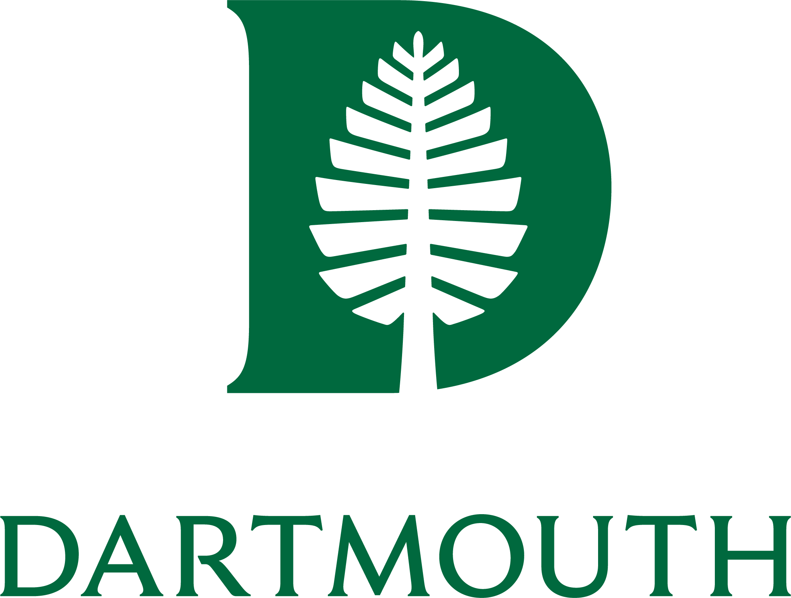

My work
Developing software for and performing analysis of at home cognitive tests.
Working in the lab of Dr. Lauren Weiss to study the genetics of Autism Spectrum Disorder.
 Associate Computational Biologist, Broad Institute
Associate Computational Biologist, Broad Institute
Worked with the Cancer Data Science and PRISM teams to build bioninformatics and machine learnign tools to analyze biological data from phenotypic screens.
 Scientific Computing Intern, X-Chem
Scientific Computing Intern, X-Chem
Developed software and models for analyzing a chemical database of over 200 billion molecules for early-stage pharmaceutical research.

Research Assistant, Dartmouth Computational Vision Group
Assisted in designing, executing, and analyzing research studies in a neuroscience lab focused on computational modeling of the visual system.